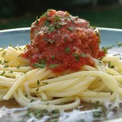

Spaghetti

Basic but delicious classic spaghetti recipe.
Ingredients
- 1 pound thin spaghetti
- 1 jar marinara sauce
- 1/2 teaspoon salt
Steps
- Boil 3 cups of water salt in a large pot and add salt.
- While water is boiling, in a separate pot heat the sauce on medium.
- When the water starts to boil, add the spaghetti and stir until submerged. Stir occasionally and cook for 6 minutes.
- Drain spaghetti in a strainer then combine the spaghetti and marinara sauce in a bowl and serve.